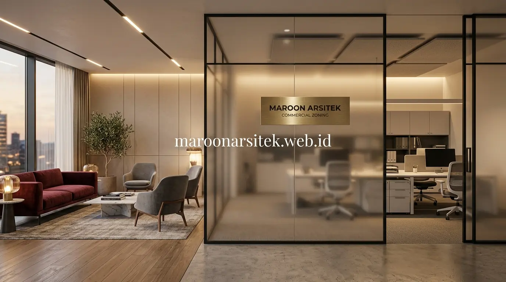

Jasa desain bangunan komersial yang profesional mempertimbangkan modularitas untuk pertumbuhan bisnis di masa depan, zonasi ruang berdasarkan interaksi pelanggan dan staf, serta sirkulasi udara dan pencahayaan yang mendukung produktivitas kerja sehari-hari. Maroon Arsitek merancang bangunan komersial yang tidak hanya memenuhi kebutuhan saat ini, tetapi juga fleksibel menyesuaikan perkembangan bisnis klien di kemudian hari melalui layanan jasa arsitek profesional di Jakarta dan sekitarnya.
Banyak bangunan komersial dirancang hanya berdasarkan kebutuhan saat ini tanpa mempertimbangkan kemungkinan perubahan skala bisnis, sehingga pemilik harus melakukan renovasi besar ketika bisnis berkembang. Bagian berikut menguraikan tiga aspek desain yang menjawab kebutuhan tata ruang produktif sekaligus fleksibel untuk jangka panjang bagi pengusaha yang ingin mendirikan ruko atau kantor di lahan strategis.
Modularitas Desain untuk Antisipasi Pertumbuhan Bisnis
Modularitas desain memungkinkan penyesuaian tata ruang di masa mendatang tanpa memerlukan renovasi besar, melalui perencanaan struktur dan partisi yang fleksibel sejak tahap desain awal bangunan komersial. Pendekatan ini penting bagi pengusaha yang memproyeksikan pertumbuhan bisnis dalam beberapa tahun ke depan dan tidak ingin terkendala oleh keterbatasan ruang yang sudah kaku sejak awal.
Penggunaan partisi ringan yang dapat dipindahkan atau disesuaikan posisinya memberikan fleksibilitas dalam mengubah konfigurasi ruang, memungkinkan penyesuaian tata letak seiring perubahan kebutuhan operasional tanpa mengubah struktur utama bangunan yang sudah berdiri secara permanen.
Perencanaan sistem mekanikal elektrikal juga mempertimbangkan kapasitas cadangan, sehingga penambahan titik listrik atau jaringan data di masa mendatang dapat dilakukan tanpa memerlukan renovasi ekstensif pada sistem yang sudah terpasang, sebagaimana diterapkan dalam berbagai proyek di galeri portofolio Maroon Arsitek.
Perencanaan Sistem MEP dengan Kapasitas Cadangan
Kebutuhan fleksibilitas jangka panjang dijawab melalui perencanaan sistem mekanikal elektrikal dengan kapasitas cadangan sejak awal, memungkinkan penambahan titik instalasi di masa mendatang tanpa memerlukan perombakan sistem secara menyeluruh. Hal ini mencakup pemasangan conduit berkapasitas lebih, jalur kabel cadangan, dan titik grounding tambahan yang direncanakan sejak tahap desain.
Perencanaan kapasitas cadangan ini menjadi investasi awal yang bijak, karena penyesuaian sistem MEP di kemudian hari umumnya lebih rumit dan mahal dibanding perencanaan kapasitas lebih sejak tahap desain awal bangunan. Investasi ini pula yang membedakan bangunan komersial profesional dari bangunan yang hanya dibangun untuk kebutuhan minimal saat ini, sesuai dengan pendekatan yang diterapkan tim kontraktor bangunan komersial Maroon Arsitek.
Zonasi Ruang Berdasarkan Interaksi Pelanggan dan Staf
Zonasi ruang yang membedakan area interaksi pelanggan dan area kerja internal staf membantu menciptakan alur operasional yang lebih terorganisir, mencegah tumpang tindih aktivitas yang dapat mengganggu produktivitas maupun kenyamanan pelanggan. Pendekatan zonasi ini menjadi dasar penting dalam desain bangunan komersial yang efisien, mulai dari skala ruko satu lantai hingga gedung perkantoran bertingkat.
Area dengan intensitas interaksi pelanggan tinggi, seperti ruang tunggu atau area kasir, ditempatkan pada posisi yang mudah diakses dari pintu masuk, sementara area kerja internal ditempatkan pada zona yang lebih privat namun tetap terhubung secara efisien untuk memperlancar operasional sehari-hari tanpa gangguan dari luar.
Perencanaan zonasi turut mempertimbangkan jalur pergerakan staf dalam melayani pelanggan, memastikan alur kerja tetap efisien tanpa harus melintasi area yang dapat mengganggu kenyamanan maupun privasi kedua belah pihak di dalam bangunan komersial yang sedang beroperasi penuh.

Jalur Pergerakan Staf yang Efisien Tanpa Mengganggu Pelanggan
Kebutuhan efisiensi operasional dijawab melalui perencanaan jalur pergerakan staf yang terpisah dari jalur utama pelanggan, memungkinkan staf melayani kebutuhan operasional tanpa harus melintasi area yang dapat mengurangi kenyamanan pelanggan yang sedang berada di lokasi. Jalur ini biasanya dirancang melalui koridor belakang atau samping yang tersembunyi namun tetap mudah diakses oleh seluruh staf operasional.
Jalur terpisah ini turut menjaga profesionalisme layanan, karena aktivitas internal seperti pengambilan stok atau koordinasi antar staf tidak terlihat langsung oleh pelanggan yang berada di area publik bangunan. Pemisahan jalur ini juga berkontribusi pada keamanan area kerja internal dari akses yang tidak diotorisasi, sebuah pertimbangan penting dalam desain bangunan ruko yang dikonversi menjadi kantor modern.
Sirkulasi Udara dan Pencahayaan yang Mendukung Produktivitas
Sirkulasi udara dan pencahayaan yang optimal berkontribusi langsung terhadap kenyamanan dan produktivitas staf yang bekerja dalam bangunan komersial, karena kondisi ruang yang pengap atau kurang cahaya dapat menurunkan konsentrasi dan efisiensi kerja sehari-hari. Aspek ini sering kali kurang diperhatikan dibanding elemen estetika visual bangunan, padahal dampaknya terhadap kinerja tim sangat signifikan dalam jangka panjang.
Penempatan bukaan ventilasi mempertimbangkan pola sirkulasi udara alami, memastikan pertukaran udara yang baik terutama pada area kerja yang digunakan dalam waktu lama oleh staf sepanjang jam operasional bisnis. Ventilasi silang antara dua sisi bangunan menjadi solusi efisien sebelum mempertimbangkan sistem pendingin udara mekanis sebagai pendukung tambahan di musim panas.
Pencahayaan alami dimaksimalkan pada area kerja utama, dilengkapi pencahayaan buatan yang sesuai standar kenyamanan visual, membantu mengurangi kelelahan mata staf yang bekerja dengan durasi panjang di dalam bangunan komersial. Integrasi cahaya alami ini pula yang menjadi salah satu prinsip utama dalam pendekatan integrasi cahaya alami pada desain interior modern.
Standar Pencahayaan Kerja untuk Mengurangi Kelelahan Visual
Kebutuhan kenyamanan visual staf dijawab melalui penerapan standar pencahayaan yang sesuai untuk area kerja, memastikan tingkat intensitas cahaya memadai tanpa menyebabkan silau atau bayangan yang mengganggu aktivitas kerja sehari-hari. Standar pencahayaan area kerja umumnya berada pada rentang 300–500 lux, dengan area detail seperti meja gambar atau stasiun komputer memerlukan hingga 750 lux untuk kenyamanan visual optimal.
Standar ini penting diterapkan konsisten di seluruh area kerja, mengingat staf yang bekerja dengan pencahayaan tidak memadai dalam waktu lama berisiko mengalami penurunan produktivitas akibat kelelahan visual yang terakumulasi. Investasi pada sistem pencahayaan yang tepat sejak tahap desain jauh lebih ekonomis dibanding mengganti instalasi setelah bangunan beroperasi, sebuah pertimbangan yang selalu diintegrasikan dalam setiap proyek jasa kontraktor bangunan komersial Maroon Arsitek.